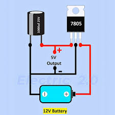

Brief introductory : An enthusiastic Electronics Engineering student dedicated to mastering circuit design and modern technology.
Always eager to learn, innovate, and apply hands-on engineering skills.

To view contact page: Type here
Learning web development equips you with a highly valuable and versatile skill set in today's digital world.
It opens doors to lucrative career opportunities and flexible work arrangements, including remote jobs and freelance projects.
Beyond career growth, mastering web development sharpens your problem-solving abilities
and logical thinking as you turn abstract concepts into interactive websites and applications.
Ultimately, it gives you the creative freedom to build your own digital projects, share your ideas globally, and bring innovative solutions to life from scratch.